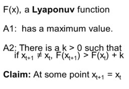
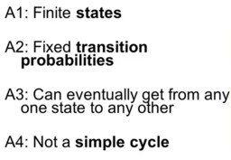

Lyapunov Functions
Lyapunov functions map models into outcomes. We can take a model or a system and ask whether there is a Lyapunov function that describes that model or system. If that is possible, then that system goes to equilibrium. If we can’t construct a Lyapunov function, then the type of outcome can be of any class. e.g., in physics you might have a velocity function over time, and if the velocity changes then it goes down with at least some minimum amount, and there is a minimum velocity, e.g. zero. Those conditions mean that the system has to stop at some point.
This can be formalised as follows. There is a Lyapunov function F(x), and the system has to stop and go to equilibrium at some point meaning that x_{t+1} = x_t, if the following conditions hold:
1. it has a maximum value (or a minimum value if it is going down);
2. there is a k > 0 such that, if x_{t+1} \ne x_t then F(x_t+1) > F(x_t) + k (or F(x_{t+1}) < F(x_t) - k if it is going down).
The change must be of some minimum amount k because of Zeno’s Arrow paradox that states if you go halfway the remaining route every day, you will never arrive at your destination as you travel smaller distances every day. If you know the minimum amount k then you know the maximum number of steps. e.g., if k is a quarter of the total distance then the maximum number of steps is 4. The tricky part is construction the Lyapunov function F(x). Sometimes it is easy, sometimes it is hard, and sometimes it is impossible to do.
The organization of cities
In any major city there is an amazing order. Restaurants have the right number of people in them, so do coffee shops. There are not huge lines behind dry cleaners. The interesting thing is that there is no central planner and the city self-organises in some way so that the right number of people are at the right places and there are no vacancies or crowds at particular points. What makes the city organise in this way?
Suppose that there are five locations everyone has to go to each week, which are the cleaners C, the grocery G, the deli D, the book store B and the fish market F, and there are five days to do them, which are Monday Mo, Tuesday Tu, Wednesday We, Thursday Th and Friday Fr. Assume that individuals choose their order of visiting those places randomly. A route that someone might take during the week is: (Mo, Tu, We, Th, Fr) => (C, G, B, D, F). Suppose there are five people that choose some random order to visit these locations. Assume that the behaviour of these people is to switch two locations as to avoid crowds.
If people follow these rules, then we can use the Lyapunov function on the process, and show that it goes to equilibrium. Assume those five people picked the following routes:
- (C, G, D, B, F),
- (G, C, D, B, F),
- (C, D, G, F, B),
- (C, B, F, G, D),
- (C, F, D, B, G).
Each week one person switches locations to avoid other people, and takes the most efficient step, meaning that he or she makes the switch that avoids the most people. After one week person 1 might then switch C and F, meaning that the next week he is going to the fish market on Monday and to the cleaners on Friday to avoid crowds at the cleaners.
Finding a Lyapunov function might be a form of trial and error. e.g., you may try the total number of people at each location per week. That doesn’t work out because the total number of people will always be 5. Another option is the number of people that the five people meet each week. In the first week person 1 meets 3 + 0 + 2 + 2 + 1 = 8 people. If this person switches the cleaners and the fish market, he will meet 4 people next week because the others don’t switch. Consequently, those others don’t meet person 1 at the cleaners too, so the total number of meetings in that week drops by 8.
This is a Lyapunov function because there is a minimum of 0 meetings during a week and people keep switching until there are no options to reduce the number of meetings. When that happens, the system enters into equilibrium. The value of k is 2 because if a person avoids meeting another person, this other person also meets one less person. This explains why cities are self-organizing because people develop routines to avoid crowds. This model is simplistic, because people move, businesses start and stop, and more people may decide to change their route simultaneously. That is going to keep a city churning and somewhat complex.
Exchange economies and externalities
An exchange market has a Lyapunov function and therefore goes to equilibrium. There are other sorts of markets that don’t go to equilibrium. It is sometimes possible to see why is that the case. What prevents us from constructing a really simple Lyapunov function and showing that the system goes to equilibrium is related to Chris Langton’s lambda used in the one-dimensional cellular automata models.
An exchange market consists of a situation where people just bring stuff, e.g. fish, baskets or money, and trade these things. The question is whether that system goes to an equilibrium, or are people just going to keep on trading things throughout the day? The assumptions for the model of the exchange market are:
- each person brings in an amount of stuff;
- people only trade if this increases their happiness at least with some fixed amount k.
This fixed amount of k represents effort or transaction costs to make the trade. That is important for the Lyapunov function to work. A possible Lyapunov function could be the total happiness of the people. There is a maximum amount of happiness to be derived from a fixed amount of stuff. There is also some fixed amount k of transaction costs such that, if the process doesn’t stop, happiness goes up by at least k.
If North Korea and Iraq exchange nuclear weapons for oil, then both countries would probably be more happy as Iraq has nuclear weapons and North Korea has oil. The United States, China, and many other countries, who were not part of the transaction, probably are not so pleased, so total happiness may not have increased with this trade. If total happiness went down, that may mean that other people then have to make other trades as they try and make total happiness go up.
In that case we don’t know for sure whether the system is ever going to stop because we can’t put a Lyapunov function on the process. It may happen in political coalitions or firms merging. When party A merges with Party B, then party C may be upset, and total happiness may not be going up. The same is true with political alliances between countries. They could make other countries less secure. And that could mean that there is no Lyapunov function.
When two people decide to date, they are both happier. Or when two people break up, presumably they are both happier. But that could affect other people who are friends of those people, who maybe wanted to date one of those people, and it’s not clear. Maybe dating has a Lyapunov function, maybe happiness is a Lyapunov function for dating, maybe it’s not. It depends on the size of the externalities.
That can be related to Langton’s lambda parameter from the simple cellular automata model. The cellular automata model tells that systems where behavior isn’t influenced by others, tend to go to equilibrium, while systems where behavior is influenced by others, tend to be complex or random. Similarly, we can apply a Lyapunov function where someone’s actions don’t materially affect others, or if they do, they make them happier, meaning that there are no negative externalities.
Time to convergence and optimality
There are two questions to Lyapunov functions:
- How long does the process take to go to an equilibrium?
- Does the process always stop at the minimum or the maximum?
How long does the process take to go to an equilibrium? If the process stops, it is in equilibrium. If it doesn’t stop, then its value according to increases by at least k. Since there’s a maximum, that means that at some point the process has to stop. Suppose that we start out with F(x1) = 100, and k = 2, and the maximum is 200 then the number of periods has to be equal or less than 50.

Does the process always stop at the minimum or the maximum? Generally a process can get stuck someplace less than the max. That can be explained in two ways. First, it is possible using a model. The rugged landscape model has multiple peaks. A Lyapunov function can be seen as taking steps up at least some distance each period, but it doesn’t necessarily mean that this is leading to the highest peak.
A second way is an actual example rather than an abstract model like a rugged landscape. Assume there are three persons, numbered 1, 2, and 3. The graph shows their preferences and they all own the item in the middle column of their corresponding row. Person 1 owns a banana prefers apples to bananas and bananas to coconuts.
Assume that there is an exchange market. Person 1 likes the apple of person 3, but if he offers the banana to person 3, she refuses. Person 2 likes the banana of person 1 but can’t trade the coconut for it. Similarly, person 3 cannot trade his apple for the coconut of person 2. None of them can make a pair wise trade and be better off.
Lyapunov: fun and deep
Lyapunov functions are one technique for determining whether or not a system goes to equilibrium. But can we always tell, possibly with the help of other techniques? The question is does the system go to equilibrium or does it not, and can we even tell? We are going to do this in a fun way with some examples and then we will go a little bit deeper. We will see why some processes are very hard to figure out.
The fun example is called chairs and offices. A firm is moving to new offices with different types of chairs. An employee, who followed this course, suggests to distribute furniture by randomly assigning each person a chair and then let people trade. The boss thinks that it is not a good idea. But the employee says that at some point the process will stop because the process consists of an exchange market and a Lyapunov function of how happy people are with their chairs. With every trade happiness goes up. People will stop trading if they are satisfied, because it takes time and effort to trade.
Then the boss also wants to do this for offices and randomly assign people offices and then let them trade. Then the employee said that is a terrible idea. The student says, the office is different because there are externalities. If a person moves because of the habits of another person, e.g. playing loud music, people in the new location may move because of this person’s habits, e.g. wandering around. And so, there will be no increase in total happiness after a move, and the system may not go to equilibrium. Finding this out requires a lot of knowledge about people’s preferences.
That leads to the deep question of when can you decide? And can you always decide? The answer is it depends on the problem. In some cases you can figure out some other way to show or prove that the process goes to equilibrium. In some other cases you can come up with a sophisticated Lyapunov function to show that the system goes to equilibrium. But other problems, even those that seem incredibly simple, turn out to be very hard to solve.
e.g., the Collatz problem or HOTPO (half or three plus one), is that you pick a number, and then do the following. If it is an even number, you divide it by two, if it is an odd number, you multiply it by three and add one. You stop if you reach one. The question is, does this process ever stop? For 5 you get: 16, 8, 4, 2, 1 (stop). For 7 you get: 22, 11, 34, 17, 52, 26, 13, 40, 20, 10, 5 (stops because 5 stops). For 27 and many other numbers the Collatz problem hasn’t been solved yet. So for some numbers we can tell and for some numbers we can’t. For the chair problem we can tell, but for the office problem we can’t.


Lyapunov or Markov
There are some fundamental differences between the equilibria with Lyapunov functions and equilibria with Markov processes. Both Markov processes and Lyapunov functions give conditions under which we can determine that a system is going to equilibrium.
A Lyapunov function F has a maximum value. If the process isn’t in equilibrium then it goes up by at least some fixed amount k. This has to stop at some point. A Markov process has a finite number of states, and if the probability of moving between those states stays fixed over time, and it is possible to get from any one state to any other, and it is not a simple cycle, the Markov convergence theorem states that the system goes to a unique equilibrium distribution that doesn’t depend on the initial state.
This is a stochastic equilibrium so the system is still churning. In a Markov process, history doesn’t matter. A Lyapunov function could depend a lot on the initial conditions. There could be many equilibria depending on where you start and where you go. It’s also not a stochastic equilibrium. It is a fixed point.
If you can construct a Lyapunov function, then the system goes to equilibrium. If you can’t, that doesn’t mean it doesn’t. If you can write down a Lyapunov function, you can figure out how long it’s going to take to reach equilibrium. A Lyapunov equilibrium needs not be unique or efficient. The reason a Lyapunov system won’t go equilibrium is because of externalities pointing in the other direction.
That is the same lesson we learned from the Langton’s lambda in the simple cellular automata model. When one person’s action or one cell’s action depends on the actions of others, the system’s likely to churn. When what I do is unaffected by other people, then the system is likely to go to equilibrium.
References
Note: this page is based on the following source:
- (Page 2014) MOOC, Course material & Transcripts.
- TA Notes by (Fisher 2014).
- Student notes by in (Klein Ikink 2016) and (Groh 2017).
Citation
@online{2023,
author = {},
title = {Lesson 11 - {Lyapunov} {Functions}},
date = {2023-08-11},
url = {https://orenbochman.github.io/notes-model-thinking/posts/w11.html},
langid = {en}
}